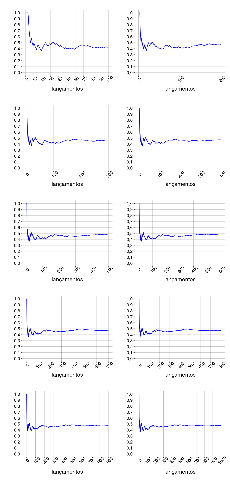
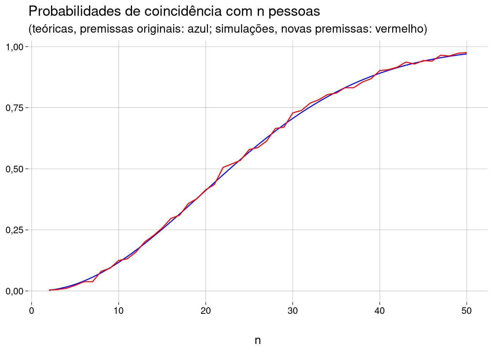

Capítulo 7 Probabilidades
7.2 Espaço amostral
Para falar em probabilidades, precisamos falar de experimentos, resultados, espaços amostrais, e eventos.
Um experimento probabilístico é um experimento cujo resultado exato é desconhecido a priori; mais ainda: executar o experimento diversas vezes, nas mesmas condições, pode produzir resultados diferentes.
O espaço amostral é o conjunto de todos os resultados possíveis de um experimento probabilístico, representados de alguma forma.
-
Exemplos:
Experimento: lançar uma moeda;
Espaço amostral: \(\{ K, C \}\) (onde \(K\) é cara, \(C\) é coroa).Experimento: lançar \(2\) moedas;
Espaço amostral: \(\{ (K,K), (K,C), (C,K), (C,C) \}\).Experimento: lançar um dado;
Espaço amostral: \(\{ 1, 2, 3, 4, 5, 6 \}\).Experimento: lançar \(2\) dados:
Espaço amostral: \(\{ (1, 1), (1, 2), \ldots, (6, 5), (6, 6) \}\).
7.3 Evento
Um evento é um subconjunto do espaço amostral; ou seja, um evento é um conjunto de resultados.
-
Exemplos:
Lançar uma moeda e obter cara:
\(\{ K \}\).Lançar 2 moedas e obter resultados iguais:
\(\{ (K,K), (C,C) \}\).Lançar um dado e obter um número maior que 4:
\(\{ 5, 6 \}\).Lançar 2 dados e obter 2 números iguais:
\(\{ (1,1), (2,2), (3,3), (4,4), (5,5), (6,6) \}\).
Dizemos que o evento \(A\) ocorreu se o experimento foi realizado e o resultado obtido está no conjunto que corresponde ao evento \(A\).
7.4 Análise Combinatória
Para calcularmos probabilidades, vamos precisar contar a quantidade de certos objetos complexos (formados por partes menores).
Existem técnicas de contagem, que são assunto de Análise Combinatória.
-
Exemplos:
-
Quantas senhas de \(6\) caracteres (dentre letras e dígitos apenas) existem, sem distinguir entre minúsculas e maiúsculas?
-
E se não puder haver repetição de caracteres?
-
Se você nunca tiver estudado técnicas de contagem, ou se quiser revisar ou aprender mais, consulte o excelente livro Morgado et al. (2004).
7.5 Probabilidade clássica
Nesta abordagem simples — que pode não ser a correta para o problema que estamos tentando resolver —, cada resultado do espaço amostral tem a mesma chance de ocorrer.
-
Ou seja, para um evento \(A\), a probabilidade \(P(A)\) é
\[ P(A) = \frac{\text{Qtde de resultados em } A}{\text{Qtde de resultados no espaço amostral}} \]
-
Exemplo: de um baralho normal, de \(52\) cartas, qual a probabilidade de escolher uma carta ao acaso e obter
-
Uma carta de ouros?
-
Uma carta vermelha?
-
Uma carta de figura (J, Q ou K)?
-
Uma carta de ouros, copas, paus ou espadas?
-
Um carta de um naipe verde?
Só podemos usar este raciocínio se todos os resultados do experimento tiverem a mesma probabilidade de ocorrer.
Como a carta é escolhida ao acaso, esta condição é satisfeita neste exemplo.
-
7.6 Probabilidade empírica
Baseada em repetições de um experimento probabilístico.
-
Nesta abordagem, a probabilidade de um evento é sua frequência relativa:
\[ P(A) = \frac{\text{Qtde de ocorrências de } A}{\text{Qtde total de repetições do experimento}} \]
Esta abordagem é fácil de usar quando é possível repetir o experimento muitas vezes, nas mesmas condições (lançar uma moeda, escolher uma carta de um baralho).
Em outros casos (calcular a probabilidade de um candidato vencer uma eleição), não é possível repetir o experimento nas mesmas condições.
-
Exemplo: se lançarmos uma moeda não-viciada muitas vezes, a proporção de caras vai ser aproximadamente \(0{,}5\). Os gráficos abaixo mostram como, à medida que o número de lançamentos aumenta (no eixo horizontal), a proporção de caras (no eixo vertical) vai se aproximando de \(0{,}5\):
 -
A lei dos grandes números é um resultado matemático que diz, essencialmente, que, quando o número \(n\) de repetições de um experimento tende a infinito, a frequência relativa de um evento tende à sua probabilidade real.
Um erro comum é achar que, se houve poucas caras nos lançamentos mais recentes, então a probabilidade de o resultado ser cara no próximo lançamento é maior, para que a proporção de caras fique mais perto de \(0{,}5\).
A lei dos grandes números fala sobre os resultados do experimento quando \(n\) tende ao infinito, não no futuro próximo.
Em lançamentos independentes de uma moeda não-viciada, a probabilidade de cara sempre é \(0{,}5\).
7.7 Probabilidade subjetiva
Outra interpretação de probabilidades se baseia na crença — a estimativa de um agente sobre a ocorrência de um evento.
Uma maneira de quantificar a crença é através de apostas justas.
-
Por exemplo, você aposta com um amigo que
Se o seu time de basquete8 vencer o próximo jogo contra o dele, ele pagará \(\$3\) para você.
Se o time dele vencer o próximo jogo contra o seu, você pagará \(\$1\) para ele.
Se você considera justa esta aposta, então você crê que a probabilidade de o time dele vencer é \(3\) vezes maior do que a probabilidade de o seu time vencer.
-
Como a soma das probabilidades de um evento e do evento complementar deve ser \(1\), isto equivale a dizer que
\[ P(\text{seu time vencer}) = 1/4 \qquad\text{e}\qquad P(\text{time dele vencer}) = 3/4 \]
-
Em mais detalhes:
Você pode receber menos com uma probabilidade maior,
Seu amigo pode receber mais com uma probabilidade menor,
A razão entre as quantias (\(3\)) é contrabalançada exatamente pela razão entre as probabilidades (\(1/3\)).
7.8 Formalização de probabilidades
Para trabalhar matematicamente com probabilidades, é preciso definir as “regras do jogo”.
-
Tudo que se pode concluir sobre probabilidades é consequência dos seguintes axiomas, formulados por Kolmogorov em 1933:
\(0 \leq P(A) \leq 1\), para qualquer evento \(A\).
\(P(\Omega) = 1\), onde \(\Omega\) é o espaço amostral (o conjunto de todos os resultados possíveis do experimento em questão);
\(P(\bar A) = 1 - P(A)\), onde \(\bar A\) é o evento complementar de \(A\) (i.e., o evento que corresponde a \(A\) não ocorrer)
\(P(A_1 \cup \cdots \cup A_n) = P(A_1) + \cdots + P(A_n)\), onde \(A_1, \ldots, A_n\) são eventos disjuntos dois a dois (i.e., \(A_i\) e \(A_j\) não podem ocorrer ao mesmo tempo, para todo par \((i, j)\) com \(i \neq j\)).
-
Mostre, a partir dos axiomas acima, que
\[ P(\varnothing) = 0 \]
7.9 Eventos independentes (explicação informal)
Se a ocorrência de \(A\) não influencia a ocorrência de \(B\), nem vice-versa, dizemos que os eventos \(A\) e \(B\) são independentes.
-
Exemplo:
O experimento é lançar um dado duas vezes.
\(A\) é o evento o primeiro lançamento deu um número par.
\(B\) é o evento o segundo lançamento deu 6.
Saber se \(A\) aconteceu não nos ajuda em nada a estimar se \(B\) aconteceu.
Aqui, \(A\) e \(B\) são independentes.
-
Outro exemplo:
O experimento é lançar um dado duas vezes.
\(A\) é o evento o primeiro lançamento deu um número menor que \(3\).
\(B\) é o evento a soma dos dois lançamentos é maior que \(8\).
Agora, saber se \(A\) aconteceu ajuda a estimar se \(B\) aconteceu.
Na verdade, se \(A\) aconteceu, \(B\) é impossível (a probabilidade de \(B\), dado \(A\), é \(0\)).
Se \(A\) não aconteceu, a probabilidade de \(B\) é \(5/12\).
Aqui, \(A\) e \(B\) não são independentes.
-
A probabilidade de os eventos \(A\) e \(B\) acontecerem ao mesmo tempo é escrita como
\[ P(A, B) \qquad \text{ou como} \qquad P(A \cap B) \]
-
Quando \(A\) e \(B\) são independentes,
\[ P(A, B) = P(A) \cdot P(B) \]
Ou seja, quando \(A\) e \(B\) são independentes, a probabilidade de \(A\) e \(B\) acontecerem ao mesmo tempo é igual ao produto das probabilidades de \(A\) e de \(B\).
Mais adiante, vamos ver uma definição formal de independência, e vamos provar esta última igualdade.
7.10 \(P(A \cup B)\) com \(A\) e \(B\) não-disjuntos
-
Um dos axiomas de probabilidade fala sobre a probabilidade da união de vários eventos disjuntos (sem elementos em comum):
\[ P(A_1 \cup \cdots \cup A_n) = P(A_1) + \cdots + P(A_n) \]
E se os eventos não forem disjuntos?
-
Veja a figura abaixo:
???
Imagine que a probabilidade de um evento é proporcional à sua área nesta figura.
Se você somar a área de \(A\) com a área de \(B\), você vai estar contando duas vezes a área comum aos dois (a área que corresponde a \(A \cap B\)).
Por isso, o certo é “descontar” esta área.
-
O resultado é
\[ P(A \cup B) = P(A) + P(B) - P(A \cap B) \]
Exemplo: suponha que 25% das pessoas têm cachorro, 29% das pessoas têm gato, e 12% das pessoas têm cachorro e gato.
-
Qual a probabilidade de que uma pessoa tenha gato ou cachorro ou ambos?
\[ \begin{aligned} P(\text{cachorro } \cup \text{ gato}) &= P(\text{cachorro}) + P(\text{gato}) - P(\text{cachorro } \cap \text{ gato}) \\ &= 0{,}25 + 0{,}29 - 0{,}12 \\ &= 0{,}42 \end{aligned} \]
-
No geral, para \(n\) eventos \(A_1, \ldots, A_n\):
\[ \begin{aligned} P(A_1 \cup \cdots \cup A_n) &= P(A_1) + \cdots + P(A_n) \\ & - P(A_1 \cap A_2) - \cdots - P(A_{n-1} \cap A_n) \\ & + P(A_1 \cap A_2 \cap A_3) + \cdots + P(A_{n-2} \cap A_{n-1} \cap A_n) \\ & \cdots \\ & \pm P(A_1 \cap \cdots \cap A_n ) \end{aligned} \]
-
Na última linha
o sinal vai ser \(+\) se \(n\) for ímpar;
o sinal vai ser \(-\) se \(n\) for par;
poderíamos escrever, então, \((-1)^{n+1} \cdot P(A_1 \cap \cdots \cap A_n )\).
-
Escreva, seguindo o padrão acima, a expressão para
\[ P(A \cup B \cup C) \]
7.11 Problema do aniversário
7.11.1 Solução teórica
Em uma sala estão \(25\) pessoas escolhidas ao acaso.
Qual a probabilidade de que pelo menos \(2\) delas façam aniversário no mesmo dia do ano?
-
Premissas:
Os dias dos aniversários das pessoas são independentes.
Cada dia do ano tem a mesma probabilidade de ser o aniversário de alguém.
Vamos ignorar anos bissextos. Cada ano tem 365 dias.
Queremos achar \(P(I)\), onde \(I\) é o evento de que pelo menos duas pessoas têm aniversários iguais.
Vamos calcular a probabilidade \(P(N)\) de que não haja aniversários iguais.
Este evento \(N\) é o complementar do evento \(I\), i.e., \(N = \bar I\).
Então, \(P(I) = 1 - P(N)\).
-
\(P(N)\) é a probabilidade de que todos os aniversários caiam em dias diferentes:
A pessoa \(1\) pode ter nascido em qualquer dia do ano.
A pessoa \(2\) precisa ter nascido em algum dos outros \(364\) dias. A probabilidade é \(\frac{364}{365}\).
A pessoa \(3\) precisa ter nascido em algum dos outros \(363\) dias. A probabilidade é \(\frac{363}{365}\).
\(\ldots\)
A pessoa \(25\) precisa ter nascido em algum dos outros \(341\) dias. A probabilidade é \(\frac{341}{365}\).
-
Como os nascimentos são independentes, a probabilidade de todos os eventos acontecerem juntos é o produto das probabilidades:
\[ P(N) = \frac{364}{365} \cdot \frac{363}{365} \cdot \cdots \cdot \frac{341}{365} = \frac{364 \cdot 363 \cdot \cdots \cdot 341}{365^{24}} \]
-
O que dá
pn <- prod((364:341)/365) pn## [1] 0,4313003 -
Então, \(P(I)\) é
1 - pn## [1] 0,5686997 Surpreso? Com \(25\) pessoas na sala, é mais provável haver do que não haver coincidência de aniversários!
7.11.2 Simulação
-
Vamos simular milhares de salas com \(25\) pessoas satisfazendo as premissas e ver em quantas delas há coincidência de aniversários. Examine o código abaixo:
nsalas <- 1e4 npessoas <- 25 coincidencia <- function(sala) { # Se a quantidade de valores únicos for diferente # da quantidade total de valores, então há repetição !(length(unique(sala)) == length(sala)) } gerar_e_testar <- function(npessoas) { # Escolhemos, ao acaso, npessoas números entre 1 e 365, # com reposição sala <- sample(1:365, npessoas, replace = TRUE) # Testamos se há alguma coincidência de aniversários coincidencia(sala) } simular <- function(npessoas, nsalas) { resultados <- replicate(nsalas, gerar_e_testar(npessoas)) # Como resultados é um vetor booleano, tirar a média # vai dar a proporção de resultados verdadeiros, # que é a probabilidade. mean(resultados) } simular(npessoas, nsalas)## [1] 0,5625
7.11.3 Para diferentes valores de \(n \in \{2, 3, \ldots, 50\}\)
Soluções teóricas
-
Vamos calcular as probabilidades de coincidência para diferentes quantidades \(n\) de pessoas na sala e fazer um gráfico:
npessoas <- 2:50 p <- function(n) { # Fórmula geral, para n pessoas 1 - prod((364:(366 - n))/365) } probs <- sapply(npessoas, p) grafico <- probs %>% as_tibble() %>% ggplot(aes(x = npessoas, y = value)) + geom_line(color = 'blue') + labs( title = 'Probabilidades de coincidência com n pessoas', y = NULL, x = 'n' ) grafico Este problema é tão usado em cursos de probabilidade que o R oferece as funções
pbirthdayeqbirthday.Leia a ajuda de
pbirthdaye recrie o gráfico acima usando esta função.-
Leia a ajuda de
qbirthdaye responda:-
Quantas pessoas são necessárias para que a probabilidade de uma ou mais coincidências seja de pelo menos \(50\%\)?
-
Quantas pessoas são necessárias para que a probabilidade de uma ou mais coincidências seja de pelo menos \(90\%\)?
-
Quantas pessoas são necessárias para que haja uma probabilidade de pelo menos \(50\%\) de que \(5\) ou mais pessoas façam aniversário no mesmo dia?
-
7.11.4 Premissas mais realistas
Vamos considerar anos bissextos. O total de dias muda para \(366\), mas um dos dias (\(29\) de fevereiro) tem \(1/4\) da probabilidade de um dia normal de ser o aniversário de alguém.
Além disso, vamos supor que haja \(165\) dias em que a probabilidade de alguém nascer é \(25\%\) maior do que nos \(200\) dias normais.
A solução teórica é bem mais complexa do que no caso uniforme!
Vamos fazer apenas a simulação.
-
Preste atenção no vetor
pesos, que representam as probabilidades de dias diferentes:\(200\) dias normais têm peso \(4\);
\(165\) dias mais prováveis têm peso \(5\);
\(1\) dia (\(29\) de fevereiro) tem peso \(1\).
Estes pesos não são probabilidades, porque a soma deles não é \(1\).
A função
samplenormaliza automaticamente estes pesos.-
Normalizar significa dividir todos os valores pela mesma constante, de forma que a soma seja \(1\).
nsalas <- 1e3 npessoas <- 2:50 pesos <- c( rep(4, 200), # dias normais rep(5, 165), # dias mais prováveis 1 # 29 de fevereiro ) gerar_e_testar <- function(npessoas, pesos) { sala <- sample(1:366, npessoas, replace = TRUE, prob = pesos) coincidencia(sala) } simular <- function(npessoas, nsalas, pesos) { resultados <- replicate(nsalas, gerar_e_testar(npessoas, pesos)) mean(resultados) } novas_probs <- sapply(npessoas, simular, nsalas, pesos) grafico + geom_line( data = as_tibble(novas_probs), mapping = aes(y = value), color = 'red' ) + labs( subtitle = paste( '(teóricas, premissas originais: azul;', 'simulações, novas premissas: vermelho)' ) ) As novas premissas não mudaram muita coisa.
-
Escreva a versão normalizada do vetor
pesos.
7.12 Exercícios
7.12.1 Semanas com mais nascimentos
Imagine que \(50\%\) dos nascimentos de um ano aconteçam em um período de \(15\) semanas, e o restante dos nascimentos seja distribuído de maneira uniforme no restante do ano. Ignore anos bissextos.
Faça simulações como na seção anterior (\(2 \leq n \leq 50\)) e construa o gráfico comparando com as probabilidades teóricas (com as premissas originais).
-
Interprete o resultado.

7.12.2 Pôquer
Uma mão de pôquer consiste de \(5\) cartas retiradas ao acaso de um baralho de \(32\) cartas (\(4\) naipes, cada um com cartas 7, 8, 9, 10, J, Q, K, A).
-
Calcule as seguintes probabilidades teoricamente e através de simulações.
-
Qual a probabilidade de obter uma mão sem ases?
-
Qual a probabilidade de obter \(4\) ases?
-
Qual a probabilidade de obter uma sequência (7 a J, 8 a Q, 9 a K, ou 10 a A) de naipes quaisquer?
-
Qual a probabilidade de obter uma sequência (7 a J, 8 a Q, 9 a K, ou 10 a A) do mesmo naipe?
-
7.14 Probabilidade condicional
Em um mesmo experimento, saber que um evento \(B\) aconteceu pode dar informação sobre um outro evento \(A\).
Por exemplo, ao lançar um dado, a probabilidade de \(A\) — conseguir um \(6\) — é de \(1/6\).
Se formos informados que o evento \(B\) — o lançamento deu um número maior que \(3\) — ocorreu, então a probabilidade de ter conseguido um \(6\) passa para \(1/3\).
-
Escrevemos
\[ P(A) = 1/6 \]
e
\[ P(A \mid B) = 1/3 \]
\(P(A \mid B)\) é a probabilidade de \(A\) ocorrer, dado que \(B\) ocorreu.
É uma probabilidade condicional. Estamos condicionando sobre \(B\).
7.14.1 Exemplo: Titanic
-
A seguinte tabela mostra as quantidades de pessoas no Titanic, categorizadas como sobreviventes ou não, e divididas pela classe:
## Classe ## Sobreviveu 1 2 3 Tripulação Total ## Não 122 167 528 673 1490 ## Sim 203 118 178 212 711 ## Total 325 285 706 885 2201
Probabilidade de ser tripulante
Escolha uma das \(2.201\) pessoas ao acaso.
Qual é a probabilidade de a pessoa escolhida ser um tripulante?
-
Esta é uma probabilidade não-condicional: basta dividir o total de tripulantes pelo total de pessoas:
\[ P(\text{tripulante}) = \frac {885} {2.201} \]
-
A tabela está na variável
tit_tab. Em R, podemos indexar uma tabela pelos nomes. O primeiro índice corresponde à linha, o segundo à coluna:ptrip <- tit_tab['Total', 'Tripulação'] / tit_tab['Total', 'Total'] ptrip## [1] 0,40209
Probabilidade de não ser tripulante
Escolha uma das \(2.201\) pessoas ao acaso.
Qual é a probabilidade de a pessoa escolhida não ser um tripulante?
-
Esta é uma probabilidade não-condicional: basta dividir o total de não-tripulantes pelo total de pessoas:
\[ P(\text{não-tripulante}) = \frac {325 + 285 + 706} {2.201} \]
-
Em R, podemos selecionar várias células de uma tabela; basta usar um vetor como índice:
## [1] 0,59791 -
Mas nem era preciso fazer este cálculo. Basta perceber que “ser tripulante” e “ser não-tripulante” são eventos complementares. Daí,
\[ P(\text{não-tripulante}) = 1 - P(\text{tripulante}) \]
1 - ptrip## [1] 0,59791
Probabilidade de sobreviver
Escolha uma das \(2.201\) pessoas ao acaso.
Qual é a probabilidade de a pessoa escolhida ter sobrevivido?
-
Esta é uma probabilidade não-condicional: basta dividir o total de sobreviventes pelo total de pessoas:
\[ P(\text{sobrevivente}) = \frac {711} {2.201} \]
tit_tab['Sim', 'Total'] / tit_tab['Total', 'Total']## [1] 0,323035
Probabilidade de ser de primeira classe
Escolha uma das \(2.201\) pessoas ao acaso.
Qual é a probabilidade de a pessoa escolhida ser da primeira classe?
-
Esta é uma probabilidade não-condicional: basta dividir o total de passageiros da primeira classe pelo total de pessoas:
\[ P(\text{1ª classe}) = \frac {325} {2.201} \]
tit_tab['Total', '1'] / tit_tab['Total', 'Total']## [1] 0,1476602
Probabilidade de sobreviver E ser de primeira classe
Escolha uma das \(2.201\) pessoas ao acaso.
Qual é a probabilidade de a pessoa escolhida ter sobrevivido e ser da primeira classe?
Isto é uma probabilidade conjunta — a probabilidade de dois eventos terem ocorrido ao mesmo tempo. Ainda não é uma probabilidade condicional.
-
Queremos saber a proporção de pessoas, do total de pessoas a bordo, que eram de primeira classe e sobreviveram.
\[ P(\text{sobrevivente da 1ª classe}) = \frac {203} {2.201} \]
tit_tab['Sim', '1'] / tit_tab['Total', 'Total']## [1] 0,0922308
Probabilidade de uma pessoa da primeira classe sobreviver
Escolha uma das \(2.201\) pessoas ao acaso.
Qual é a probabilidade de a pessoa escolhida ter sobrevivido, dado que a pessoa estava na primeira classe?
-
Isto é uma probabilidade condicional, escrita como
\[ P(\text{sobrevivente } \mid \text{ 1ª classe}) \]
Cuidado, agora.
-
Já sabemos que a pessoa é da primeira classe. Logo, restringimos o universo a estas 325 pessoas. O denominador vai ser o total de passageiros da primeira classe:
\[ P(\text{sobrevivente } \mid \text{ 1ª classe}) = \frac {203} {325} \]
tit_tab['Sim', '1'] / tit_tab['Total', '1']## [1] 0,6246154 -
Perceba que
\[ P(\text{sobreviveu} \mid \text{1ª classe} ) \]
é o mesmo que
\[ \frac{P(\text{sobreviveu } \cap \text{ 1ª classe})}{P(\text{1ª classe})} \]
Probabilidade de um sobrevivente ser da primeira classe
Escolha uma das \(2.201\) pessoas ao acaso.
Qual é a probabilidade de a pessoa escolhida ser da primeira classe, dado que ela sobreviveu?
-
Isto é outra probabilidade condicional, escrita como
\[ P(\text{1ª classe } \mid \text{ sobreviveu}) \]
Não é a mesma probabilidade que \(P(\text{sobreviveu} \mid \text{1ª classe})\).
-
Em português:
-
\(P(\text{sobreviveu} \mid \text{1ª classe})\) é a probabilidade de
A pessoa sobreviver, dado que era da primeira classe;
Equivalentemente: alguém da primeira classe sobreviver.
-
\(P(\text{1ª classe } \mid \text{ sobreviveu})\) é a probabilidade de
A pessoa ter sido da primeira classe, dado que sobreviveu;
Equivalentemente: alguém que sobreviveu ter sido da primeira classe.
Releia até entender.
-
-
Agora, restringimos o universo às pessoas que sobreviveram. Dentre estas, quantas são da primeira classe?
\[ P(\text{1ª classe } \mid \text{ sobreviveu}) = \frac {203} {711} \]
tit_tab['Sim', '1'] / tit_tab['Sim', 'Total']## [1] 0,2855134Este é um exemplo de que \(P(A \mid B)\) pode ser diferente de \(P(B \mid A)\).
7.14.2 Definição de probabilidade condicional
Como vimos nos exemplos, para calcular \(P(A \mid B)\), restringimos o universo aos elementos onde \(B\) acontece, e, deste universo, verificamos quantos elementos também correspondem a \(A\) acontecer — isto é, elementos onde \(A \cap B\) acontece.
-
Em termos de frequência relativa:
\[ \frac{\text{ocorrências de } A \cap B}{\text{ocorrências de }B} \]
-
Em termos de probabilidade, a definição é
\[ P(A \mid B) \quad=\quad \frac{P(A \cap B)}{P(B)} \]
7.14.3 Exercícios
No Titanic,
Qual a probabilidade de um tripulante sobreviver?
Qual a probabilidade de um sobrevivente ser tripulante?
Qual a probabilidade de um não-tripulante sobreviver?
Qual a probabilidade de um sobrevivente não ser tripulante?
-
Compare as probabilidades condicionais de uma pessoa sobreviver dado que
Ela estava na 1ª classe. (Já calculada no exemplo acima: \(0{,}62\).)
Ela estava na 2ª classe.
Ela estava na 3ª classe.
Ela era da tripulação.
Que conclusões você tira?
7.15 Probabilidade conjunta
Imagine que queremos calcular a probabilidade de dois eventos \(A\) e \(B\) acontecerem ao mesmo tempo.
Ou seja, queremos descobrir a probabilidade conjunta \(P(A \cap B)\).
Muitas vezes, é difícil calcular esta probabilidade diretamente.
-
A fórmula para calcular \(P(A \mid B)\) nos dá uma maneira de calcular \(P(A \cap B)\):
\[ P(A \mid B) \;=\; \frac{P(A \cap B)}{P(B)} \quad\iff\quad P(A \cap B) \;=\; P(A \mid B) \cdot P(B) \]
-
Ou, invertendo \(A\) e \(B\),
\[ P(B \mid A) \;=\; \frac{P(A \cap B)}{P(A)} \quad\iff\quad P(A \cap B) \;=\; P(B \mid A) \cdot P(A) \]
-
Em palavras:
A probabilidade de \(A\) e \(B\) acontecerem juntos é a probabilidade de \(A\) dado que \(B\) aconteceu, multiplicada pela probabilidade de \(B\).
Ou, invertendo \(A\) e \(B\), a probabilidade de \(A\) e \(B\) acontecerem juntos é a probabilidade de \(B\) dado que \(A\) aconteceu, multiplicada pela probabilidade de \(A\).
7.16 Independência
Mais acima, vimos que, para dois eventos independentes \(A\) e \(B\), a probabilidade conjunta \(P(A \cap B)\) é igual a \(P(A) \cdot P(B)\).
-
Olhando para as fórmulas acima para a probabilidade conjunta, se \(A\) e \(B\) forem independentes, então
\[ \begin{aligned} P(A \cap B) &= P(A \mid B) \cdot P(B) \\ &= P(A) \cdot P(B) \end{aligned} \]
o que nos diz que
\[ P(A \mid B) = P(A) \]
-
Da mesma forma,
\[ P(B \mid A) = P(B) \]
Em palavras: saber que um dos eventos ocorreu não altera a probabilidade do outro evento.
Qualquer uma das \(3\) igualdades pode ser tomada como a definição formal de eventos independentes.
7.16.1 Exemplos
Estar na primeira classe e sobreviver são independentes?
-
A probabilidade de sobreviver, dado que a pessoa estava na 1ª classe, é
\[ P(\text{sobreviver} \mid \text{1ª classe}) = \frac{203}{325} \]
tit_tab['Sim', '1'] / tit_tab['Total', '1']## [1] 0,6246154 -
Mas a probabilidade (incondicional) de sobreviver é
\[ P(\text{sobreviver}) = \frac{711}{2.201} \]
tit_tab['Sim', 'Total'] / tit_tab['Total', 'Total']## [1] 0,323035 Como as probabilidades são diferentes, os eventos não são independentes.
Verifique se \(P(\text{sobreviver} \cap \text{1ª classe}) = P(\text{sobreviver}) \cdot P(\text{1ª classe})\).
Faltas e turno de trabalho
-
Numa empresa:
\(75\) funcionários trabalham no turno diurno, com um número de faltas de \(3\) por semana.
\(25\) funcionários trabalham no turno noturno, com um número de faltas de \(1\) por semana.
Faltar é independente do turno de trabalho?
-
Vamos construir uma tabela:
faltas <- array( c(3, 1, 72, 24), dim = c(2, 2) ) %>% addmargins() dimnames(faltas) = list( 'Turno' = c('Diurno', 'Noturno', 'Total'), 'Presença' = c('Faltou', 'Presente', 'Total') ) faltas## Presença ## Turno Faltou Presente Total ## Diurno 3 72 75 ## Noturno 1 24 25 ## Total 4 96 100 -
A probabilidade (incondicional) de faltar é
\[ P(\text{Faltou}) = \frac{4} {100} \]
faltas['Total', 'Faltou'] / faltas['Total', 'Total']## [1] 0,04 -
A probabilidade de faltar no turno diurno é
\[ P(\text{Faltou} \mid \text{Diurno}) = \frac{3} {75} \]
faltas['Diurno', 'Faltou'] / faltas['Diurno', 'Total']## [1] 0,04 Como as probabilidades são iguais, os eventos são independentes.
Verifique que \(P(\text{Faltou}) = P(\text{Faltou} \mid \text{Noturno})\).
7.17 Probabilidade total
7.17.1 Exemplo
Dentre \(80\) homens, \(30\) têm olhos azuis.
Dentre \(50\) mulheres, \(20\) têm olhos azuis.
Neste grupo de pessoas, qual a probabilidade de ter olhos azuis?
Homens e mulheres formam uma partição deste grupo — i.e., cada pessoa só pode ser homem ou mulher (não ambos) e cada pessoa precisa ser homem ou mulher.
-
O evento “ter olhos azuis” se subdivide em dois casos mutuamente exclusivos:
Ter olhos azuis e ser homem;
Ter olhos azuis e ser mulher.
-
Vamos chamar os eventos de
\(A\) = ter olhos azuis
\(H\) = ser homem
\(M\) = ser mulher
-
Calculamos a probabilidade \(P(A)\) somando as probabilidades dos dois casos:
\[ \begin{aligned} P(A) &= P(A \cap H) + P(A \cap M) \end{aligned} \]
-
Então,
\[ \begin{aligned} P(A) = \frac{30}{130} + \frac{20}{130} = \frac{50}{130} \approx 0{,}39 \end{aligned} \]
-
Ou, antes de somar, podemos transformar as probabilidades conjuntas em produtos de uma probabilidade condicional por uma probabilidade não-condicional:
\[ \begin{aligned} P(A) &= P(A \cap H) + P(A \cap M) \\ &= P(A \mid H) P(H) + P(A \mid M) P(M) \end{aligned} \]
-
O que nos dá o mesmo resultado:
\[ \begin{aligned} P(A) &= \frac{30}{80} \cdot \frac{80}{130} + \frac{20}{50} \cdot \frac{50}{130} \\ &= \frac{50}{130} \\ &\approx 0{,}39 \end{aligned} \]
7.18 Teorema de Bayes
7.18.1 Exemplo
-
De todos os emails, \(60\%\) são spam:
\[ P(\text{spam}) = 0{,}6 \]
-
De todos os emails que são spam, \(90\%\) contêm a palavra “compre”:
\[ P(\text{compre} \mid \text{spam}) = 0{,}9 \]
-
De todos os emails (spam ou não), \(70\%\) contêm a palavra “compre”:
\[ P(\text{compre}) = 0{,}7 \]
Você acaba de receber um email. Antes de você abri-lo, qual a probabilidade de o email ser spam?
Bem, na ausência de informação adicional, \(P(\text{spam}) = 0{,}6\).
Você abre o email. Ele contém a palavra “compre”.
-
Agora, qual a probabilidade de ser spam?
\[ P(\text{spam} \mid \text{compre}) = {}? \]
-
Lembre-se de que
\[ P(\text{compre} \cap \text{spam}) = P(\text{spam} \mid \text{compre}) \cdot P(\text{compre}) \]
-
Mas também
\[ P(\text{compre} \cap \text{spam}) = P(\text{compre} \mid \text{spam}) \cdot P(\text{spam}) \]
-
As duas expressões são iguais:
\[ P(\text{spam} \mid \text{compre}) \cdot P(\text{compre}) = P(\text{compre} \mid \text{spam}) \cdot P(\text{spam}) \]
-
Isolando o termo que queremos descobrir:
\[ P(\text{spam} \mid \text{compre}) = \frac{P(\text{compre} \mid \text{spam}) \cdot P(\text{spam})}{P(\text{compre})} \]
-
Substituindo os valores:
\[ P(\text{spam} \mid \text{compre}) = \frac{0{,}9 \cdot 0{,}6}{0{,}7} \approx 0{,}77 \]
-
Isto é inferência bayesiana:
Começamos com uma probabilidade não-condicional: a priori, \(P(\text{spam}) = 0{,}6\);
Obtivemos nova informação: o email contém “compre”;
Usamos esta informação para calcular uma probabilidade condicional, a posteriori:
\[ P(\text{spam} \mid \text{compre}) = \frac{P(\text{compre} \mid \text{spam}) \cdot P(\text{spam})}{P(\text{compre})} \]
Perceba que, para isso, precisamos da probabilidade não-condicional \(P(\text{compre})\) (no denominador).
7.18.2 No geral
\[ P(A \mid B) = \frac{P(B \mid A) \cdot P(A)}{P(B)} \]
E se você não souber \(P(B)\)?
-
Use o teorema da probabilidade total:
\[ P(B) = P(B \cap A_1) + P(B \cap A_2) + \cdots + P(B \cap A_n) \] onde os \(A_i\) formam uma partição da população.
-
Isto equivale a
\[ P(B) = P(B \mid A_1)P(A_1) + P(B \mid A_2)P(A_2) + \cdots + P(B \mid A_n)P(A_n) \]
7.18.3 Outro exemplo
Uma doença rara afeta \(5\) pessoas em \(100.000\).
O exame que detecta a doença tem precisão de \(99{,}9\%\); i.e., quando uma pessoa está doente, o exame dá positivo \(99{,}9\%\) das vezes.
Quando uma pessoa não está doente, o exame dá positivo \(1\%\) das vezes. Este caso é um falso positivo.
Você faz o exame, e o resultado é positivo.
Dado este resultado, qual a probabilidade de você ter a doença?
-
Vamos nomear os eventos:
\(D = {}\) você está doente;
\(ND = {}\) você não está doente;
\(+ = {}\) o exame deu positivo;
\(- = {}\) o exame deu negativo.
-
Vamos usar Bayes:
\[ P(D \mid +) = \frac{P(+ \mid D)P(D)}{P(+)} \]
\(P(+ \mid D) = 0{,}999\), pelo enunciado.
\(P(D) = 0{,}00005\), pelo enunciado.
Daí, \(P(ND) = 1 - P(D) = 0{,}99995\).
-
Não temos \(P(+)\), mas podemos achar usando o teorema da probabilidade total, lembrando que o enunciado diz que \(P(+ \mid ND) = 0{,}01\):
\[ \begin{aligned} P(+) &= P(+ \cap D) \;+\; P(+ \cap ND) \\ &= P(+ \mid D)P(D) \;+\; P(+ \mid ND)P(ND) \\ &= 0{,}999 \cdot 0{,}00005 \;+\; 0{,}01 \cdot 0{,}99995 \\ &= 0{,}01004945 \end{aligned} \]
-
Inserindo os valores no teorema de Bayes:
\[ \begin{aligned} P(D \mid +) &= \frac{P(+ \mid D)P(D)}{P(+)} \\ &= \frac{0{,}999 \cdot 0{,}00005}{0{,}01004945} \\ &= 0{,}00497 \end{aligned} \]
A probabilidade de estar doente é menos do que \(0{,}5\%\)!
Você provavelmente esperava uma probabilidade maior.
-
Qual das \(3\) probabilidades usadas no cálculo fez o resultado ser tão pequeno?
\(P(+ \mid D)\)?
\(P(D)\)?
\(P(+)\)?